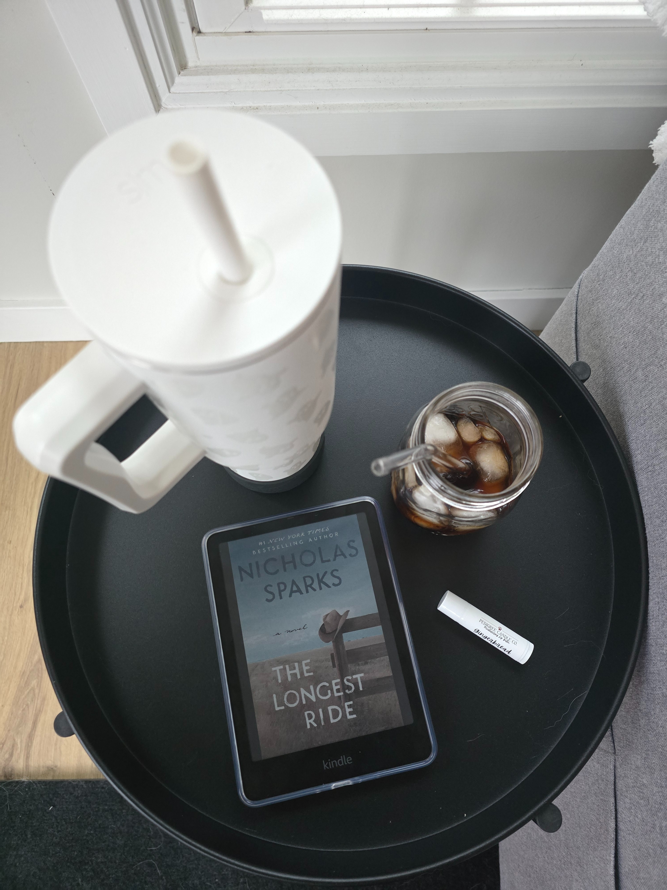
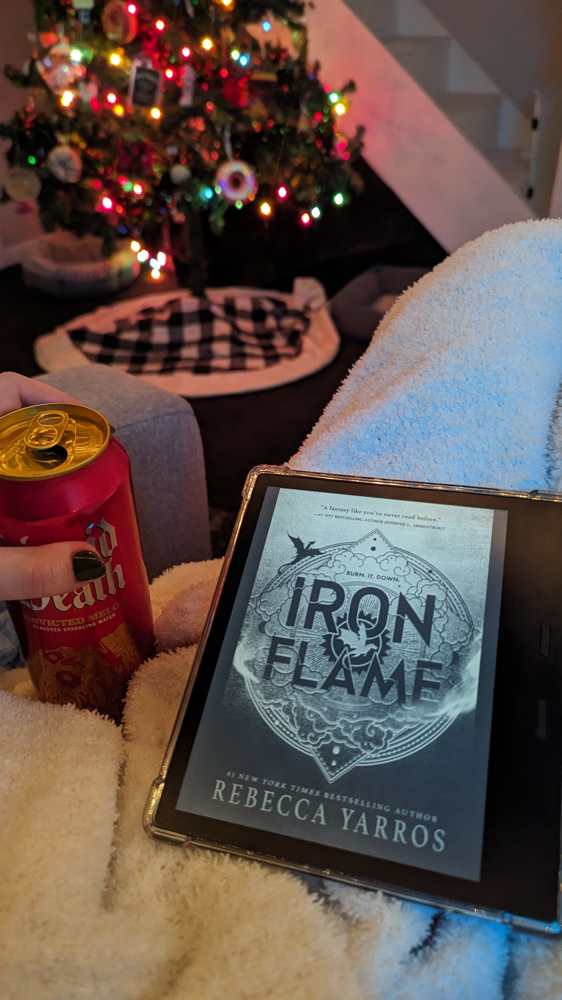

Nowhere
I'm begging someone to make this a movie. I especially loved how it wrapped up, rarely do I actually like an epilogue. Very creepy 🫣

In Her Own League
3.5 ⭐s. I really enjoyed finally getting a book for Monty. Besides Miller and Kai, this was arguably my favorite in the series.
I think I'm allowed to be annoyed at the lack of communication between Reese and Emmett though. We basically had two 3rd act break-ups. I was getting exhausted from the "we can't be together" and neither of them coming up with a solution besides him leaving.
I also know Monty felt so intensely that he couldn't stay away but at the same time, have some respect for your girl and her JOB. Every time he did something that could put her career at risk like grab her hand or just show too much affection while out somewhere, I was cringing. To me, that reads as a man that can't fully grasp the situation of how much she will be judged and her career ruined(!?) if they were revealed. And same for Reese, she's been the strongest #bossbabe so to see her risk it all didn't fully seem in character for her either.
I loved this series and characters but I hope there's plans to start something new soon.

Someone in the Attic
Meh. I was about 40% through and really not interested but I had already invested that much time so I powered through. Too many characters made it hard to keep track. Even when the ending was revealed it felt uneventful. It was creepy but there was literally so many moving parts that made it feel unrealistic.

Kissing the Sky
I really enjoyed this time period and the coming of age theme. If I'm going to be picky though, I really did not enjoy how this was written. The skipping around backward and forward just made my head spin.
Realistically it could have just started from the beginning and worked in a chronological timeline and that wouldn't have taken anything away from the story.
Suzannah's daily life, struggles with family and overall experience at Woodstock was fascinating and I appreciated the research the author put in.

This Story Might Save Your Life
🤯 this read like a movie in the best way possible. I loved the podcast format, the audio was done very well too. This is going to live rent free in my head for a while.
My biggest thing though is this is not your typical thriller, it read just more a darker rom com/fiction, if that makes sense. It just didn't quite fit the genre it's marketed for.

Jungle of Ashes
This was such a refreshing take on historical fiction in a world that's oversaturated with WWII content. The picture being painted reminded me a lot of Kristin Hannah's The Women, (which is one of my favorites ever). I felt like I was right there in the jungle looking for leaves or at the dock being shot at. There's a lot of sadness and death involved in something that was supposed to be beneficial and for the greater good.
Brynn's writing is very intentional and hooked me from the first chapter. I found myself not wanting this to end and rooting for even the most unlikeable characters by the end (well, maybe not all of them); that's how you know an author did their job successfully.
The ending was perfect and I wouldn't have had it any other way for Jo and Rafa and their whole lives ahead. I will definitely be picking up more from Brynn in the future

How (Not) to Renovate a Haunted House
I am a sucker for a ghost story and especially when it's done well and not too cheesy. This was such a
good mix of a little bit scary, local lore and just enough skepticism within other characters.
I loved Harlow's Rest and fully want to move there myself and ghost hunt. I feel like if the author
doesn't already plan to make this a fun, haunted series then that's such a missed opportunity! Take us to
all the haunted buildings in town.
This got a bit slow at times and I feel like it might have benefited from dual perspectives between Amity
and Theo. We could have learned a bit more about how he was feeling along the way too and it would have
made their ending feel even more satisfying.
I think my only gripe is that I just had a hard time believing this was a girl about to start college. A
lot of it felt a bit immature. I think the author could have easily just said that she was a sophomore or
junior in highschool and still knew her plans after graduation, etc and was dealing with her plans being
uprooted.
I would 100% look for more by this author in the future. This was well-written and very wholesome.

Change of Plans
She just never loses her touch, 7 years later and she's still as solid as ever!
There's about 3 things you can always count on with an SD book: the parents are going to suck (sometimes
they get better, sometimes they don't), there is going to be a coming of age moment near a body of water,
and the FMC is about 17 years old but drinks black coffee.
These are the things I have grown to love and look for in Sarah's writing. I was a diehard fan throughout
highschool and then worked my way through her backlog again last year after a particularly hard time
losing my Dad. I needed light and a happy ending every time and Sarah will always give this.
Change of Plans was cozy and the character growth was great. The way I cackled at the few of the one
liners, especially at the end when things were wrapping up. If I'm going to be picky though I felt like
some things weren't wrapped up as well as they could have been by the end. I wanted more concrete answers
on what was next for everyone. We needed Finley to say out loud what changed and why she didn't want to be
with Colin. Neither of them were bad people, people just grow and change. I think most readers will see a
bit of their own highschool relationship in this.
Overall, I'm SOO happy to have the opportunity for this ARC and can't wait for more new releases from
Sarah

Nightmare on Nightmare Street
This essentially was a Greatest Hits for R.L. Stine. I think maybe if you never read anything else by him in the past you'd like this but at the same time, this being an "everything bagel" as he refers to it, it's truly A LOT to take in. As an adult reading you can easily get whiplash from the back and forth. I'm not sure if that'd be better or worse for a kid reading, it might go over some heads. A quick read, I'm happy to see him back but I wasn't super impressed with this one.

Don't Look For Me
Easy to binge and had some interesting twists but by the end I was just exhausted from piecing everything together and ready for it to wrap up.

The Seven Year Slip
Not any sort of exaggeration, I'll probably be thinking about this book for years and years to come. Ashley knows how to create a concept completely new and make you fall in love with the characters just as if you're existing alongside them. I cannot recommend this book enough. 2 years later reread: A reread and this one hits just as good as it did the first time around. I love the concept, the characters. Ashley has the ability to create the coziest universe you never want to leave. 5 stars alwayssss 🍋

The Rest of the Story
Hands down the best reread of a SD book. The perfect mix of everything here and nothing incredibly unrealistic. 10/10, no notes.

The House of My Mother
I think whether or not you know Shari's story and background this is a very interesting and emotional read. I had never heard of her family prior. I truly respect how much detail she didn't include to protect her siblings, I hope they all get to heal and that those guilty in this situation get what is coming to them. I think a lot of people failed Shari and her siblings over the years, including their church, teachers, and neighbors.

Stripped Down
I didn't want to put this down, both the audio and just actual writing were so good. Whether you're a fan or don't even know who Bunnie is, her story is so inspirational and emotional. Gotta respect the hustle 👏🏼 It is truly refreshing to have a memoir that isn't just fluff or skipping over the less glamorous parts.

Good Spirits
I looooved every second of this and didn't want it to end 🥹 10/10. If I'm being nitpicky I would say their back and forth got a little old but overall, this is exactly what I want out of a Christmas read.

His & Hers
I definitely saw this twist coming but I am not mad about how it all was revealed. My biggest complaint was it just seemed too long, I was really pushing through for the last half.

The Mad Wife
So well written! This was so heavy and heartbreaking, definitely trigger heavy. It's so scary to think this was (and still in some ways) is a reality for many women. It makes you consider the ones that weren't as fortunate as Lulu to make it out.

Sounds like Love
Ashley never disappoints. I love her writing style and emotion she can easy add. I didn't absolutely love the concept, the misunderstood rockstar is overdone imo, but this was done well.

Rider of Dragons
I think this had a lot of potential but overall unfortunately it was a miss from me. This could benefit from some added detail, renaming and revamp of the overall description. Classifying this as a "dark and thrilling romantasy" definitely do not match what I read. I would classify this as more of a cozy fantasy, they have cellphones and drink Lavender lattes at the local coffee shop...

Just Listen
2025 is all about nostalgic rereads so I decided to dig into the archives for these I loved in highschool. This hit just about as well as it did when I first read it, if not better. I appreciate Sarah's way of using serious life events and bringing them to light in a normal, very relatable way. I am glad this is what I was reading when I was 15, I would definitely encourage this next generation to do the same.

The Winter People
I heard such good things about this one and it fully fell flat for me, I was just reading to get through it by the end. There were entirely too many perspectives and back and forth, I feel like I lost so much because I was wondering who was who and how it all tied together. The present day perspectives were the better ones imo.

The Women
All I can say is: wow. I did not want to put this down and it's been occupying my brain since I started it. I was there along with Frankie for every step, I think this one will stay with me for a while.

Heart Life Music
Pretty surface level as far as memoirs go but overall it was interesting to follow Kenny's career timeline.

Project Hail Mary
The entire book is just one long introspective monologue, sooo.. if you're into that, this is for you. I think I enjoyed the ending more than I should have just bc I was excited it was over and finally had a change of scenery. More characters and actual action would have improved this for me. There's only so much science info that your average reader can absorb before it gets boring. I think audible skipped a chapter for me at one point and I truly didn't miss anything relevant.

The Outlaw Noble Salt
I really wanted to like this but the story was too all over the place at the beginning. Basically you didn't need the first 50% of the book. I usually love Amy's writing but some personal things I couldn't get past were just how the characters were referred to with all their nicknames... it's so hard for the reader to follow when you refer to the same person as 3 different names all in a span of a sentence.

My Husband's Wife
wowww, that hook at the end of the first chapter 👀 I was really into this for the first 70% but once it started to wrap up and everything was revealed I got whiplash. Slightly a bit too convulated for my taste but still an interesting read!

Half His Age
I love Jennette and hope she keeps writing. The transition of child actor to author and sharing her growth and healing is refreshing. But I'm going to be honest, this isn't good writing. My biggest gripe especially is that the masses love shock value and this really had a lot of it. Pairing shock value with her well established name... are we rating truly on how the book was or just because of the name attached to it? An interesting read either way, I wouldn't say it's groundbreaking but it was quick to listen to.

Pitcher Perfect
This has been a great series from Tessa. I was not expecting to love Robbie and Skylar's relationship as much as I did.

Yesteryear
I think it's safe to say that this is going to be living in my head rent free for a very long time 🤯 It gives off big Don't You Worry Darling vibes. I really had no idea what direction this was headed in the beginning or even near the end. As a reader you're questioning what you think you know right along with Natalie. The cover and description caught my attention so fast. Thanks, NetGalley, for letting me be one of the first to read it. I know this will be a very well anticipated movie in the future too and can't wait for that.

The Place Where They Buried Your Heart
I went into this blind and was pleasantly surprised how easy it was to binge and kept you on the edge of your seat. There were a few details and characters I'm not sure mattered or were necessary tbh but overall it wrapped up nicely in a wholesome way.

The Library of Lost Dollhouses
I was very intrigued by this plot but it lost a bit of my interest ironically when it was revealed that it was her mother's photo in the dollhouse. I would have enjoyed either way, I don't think there needed to be an actual relation. FMC just having a love of history and saving the library would have propelled this just fine, as it basically did. I don't know that I fully understood why there needed to be an LGBTQ+ twist either, I'm not hating on it but I almost feel like it was sprinkled in for a check box.

You'll Never Know
Pretty good! It took me a bit to piece this together, the timelines were all so different, but it was easy to binge.

1689
The beginning and end really hooked me but I'll admit there was a bit too much in between. It felt a little messy at times, ghost did too much for me - maybe that's just a personal opinion. but at one point I was just "wtf am I reading?" It was great in theory but something about it wasn't executed amazingly.

The Boxcar Librarian
This was a great era to focus on, I have never picked up a historical fiction book that focuses on mining and this time period of US history. I enjoyed how it started and how it wrapped up but if I'm being picky the 3 perspectives were hard to follow at times and I had almost wished it was just 2.

Amity
I really wanted to like this, especially the time period and just overall plot... but I was bored?? There was action but in between it just felt like too much talking. Too many characters to keep track of. It wrapped up nicely but even the epilogue just seemed to go on endlessly. It felt like it was trying too hard to be deep.

16 Forever
This plot really sucked me in with the first chapter, especially as more was revealed and you learned how truly complicated it is. Everyone knows about Carter's "condition" at this point and just live around it. The typical 16 year old activities and the Maggie's band were a nice little layer of storyline. It lost a few points to me with Maggie's sister being involved which made you really start to think about Carter's situation and it kinda felt creepy. I think both sets of siblings conflicts would have made more sense with some more flashbacks or maybe a prologue at the beginning, there was a lot to their lives we never saw and just had to take guesses about relationships.

In Your Dreams
a great way to wrap up Rome 👏🏼 Madison had a lot of very funny comments that just made this so fun to read. if I'm being honest though their together but not together best friend ness for over half the book got a bit old and just made this seem slow. Annie's is still my favorite book but overall this series so very cozy and I'll miss checking in with this family.

If It Makes You Happy
Copper Run in '97 is a whole vibe but tbh, that's about all this has going for it. It leaned too much into nostalgia and not enough on a solid plot. I did love a lot about this but I struggled with the characters relationships. Michelle's relationship with her parents just seemed like an afterthought - a way to get her into having a reason to take over the inn. She learned maybe a little more about her mom through the town by the end but you were still left with a lot of questions as a reader. The situation with Tracy and how they left off with her was... Weird. Nothing wrapped up there either. In a way, this would have made a better movie than a book. It was entirely too long, focusing on smaller details. Some flashbacks to Michelle's youth could have better painted why she was the way she was and how she was growing past it and mourning her mother.

About Me
Nice to meet you, I'm Courtney! I have been on my reading journey since 2021. If you ask what my favorite genre is, I would say "yes". I read thrillers, romance, YA, historical fiction, fantasy, memiors, and everything in between. I love to find new books and share my reviews with friends.
I am an active NetGalley reviewer seeking compelling books and meaningful collaborations with authors and publishers. Each ARC I am lucky enough to receive is treated with respect and productive feedback that I would want to receive if it were my own book.


